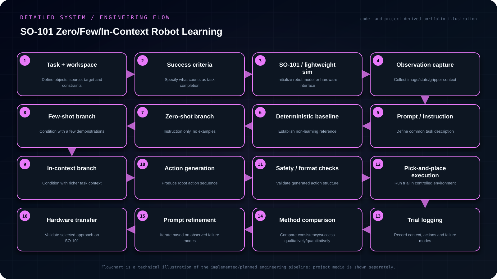

Objective
Design a controlled pick-and-place experiment for the SO-101 arm to compare zero-shot, few-shot and in-context learning strategies using common task definitions, demonstrations, success criteria, trial logging and eventual hardware transfer.
- Define one common pick-and-place task and success criteria for all learning conditions.
- Keep observations/action format consistent so zero-shot, few-shot and in-context approaches can be compared fairly.
- Log every trial, failure mode and method configuration rather than presenting unverified performance.
- Start with lightweight simulation/offline experimentation and transfer only validated behavior toward SO-101 hardware.
My contribution
- The current work focuses on defining a common task interface, demonstration/context representation, trial protocol and machine-readable experiment logs.
- Lightweight simulation is planned; policy evaluation and hardware transfer remain future work.
System architecture
Task definition → observation/context preparation → learning condition (zero/few-shot/in-context) → action generation → pick-and-place execution → success/failure logging → comparison → eventual hardware transfer.

Read the architecture as text
- Task + workspace — Define objects, source, target and constraints
- Success criteria — Specify what counts as task completion
- SO-101 / lightweight sim — Initialize robot model or hardware interface
- Observation capture — Collect image/state/gripper context
- Prompt / instruction — Define common task description
- Deterministic baseline — Establish non-learning reference
- Zero-shot branch — Instruction only, no examples
- Few-shot branch — Condition with a few demonstrations
- In-context branch — Condition with richer task context
- Action generation — Produce robot action sequence
- Safety / format checks — Validate generated action structure
- Pick-and-place execution — Run trial in controlled environment
- Trial logging — Record context, actions and failure modes
- Method comparison — Compare consistency/success qualitatively/quantitatively
- Prompt refinement — Iterate based on observed failure modes
- Hardware transfer — Validate selected approach on SO-101
Implementation
The current work focuses on defining a common task interface, demonstration/context representation, trial protocol and machine-readable experiment logs. Lightweight simulation is planned; implemented policies, completed evaluations and hardware transfer are not yet claimed. The protocol must distinguish few-shot parameter adaptation from demonstrations supplied as inference-time context.
Engineering decisions
The project deliberately separates planned evaluation from completed results. The strongest method will only be moved to physical SO-101 testing after it is stable in the lightweight experimental setup.
Challenges & debugging
The learning methods must be compared fairly: the task definition, observations, actions, reset conditions and evaluation metrics need to stay consistent across zero-shot, few-shot and in-context conditions.
Validation
Planned evaluation includes task success, completion behavior, failure/intervention type and any trajectory-quality measures that can be supported by the final implementation. No performance metric is claimed yet because the project is still in development.
Outcome & boundaries
The comparison protocol is under development. Performance results and physical transfer are not yet claimed.
Project sources
Implementation notes and available project sources. Public code is linked where available; descriptive diagrams are not independent validation.
No public repository is linked for this project.


{kind=link}